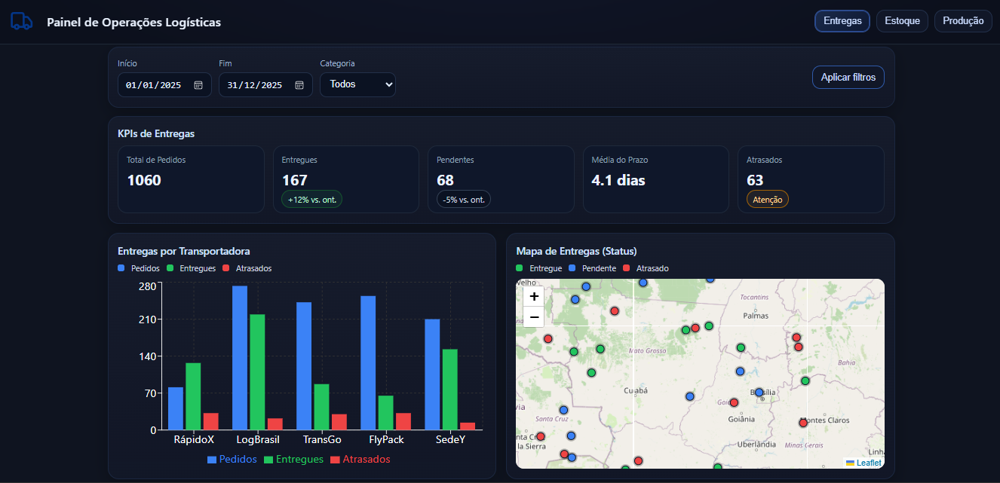
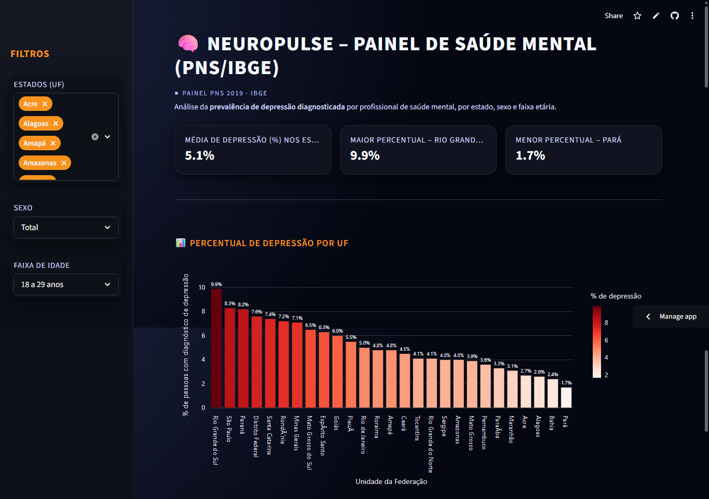

Painel de Operações Logísticas
O Painel de Operações Logísticas é uma aplicação web desenvolvida para centralizar, visualizar e gerenciar dados de entregas e operações logísticas em tempo real.
Ver projetoPortfólio em constante evolução
Eu crio aplicações web funcionais, acessíveis e escaláveis — do design de interfaces ao back-end robusto.
Desenvolvedor Full Stack
Olá, eu me chamo Janderson Vidal! Sou um desenvolvedor full stack especializado na criação de aplicações web completas.
Atuo no desenvolvimento de interfaces modernas e na construção de APIs e sistemas escaláveis no back-end.
Busco escrever código limpo, eficiente e orientado a boas práticas, sempre focado em entregar soluções funcionais e bem estreturadas.
Estou aberto a oportunidades, colaborações e boas conversas sobre tecnologias.
Projetos reais, construídos para resolver problemas de formas práticas. Explore cada um para ver como foram desenvolvidos.

O NeuroPulse é um painel interativo desenvolvido em Python com uso de Streamlit, criado para analisar a prevalência de depressão diagnosticada por profissional de saúde mental no Brasil. Este projeto utiliza dados reais, extraídos diretamente do SIDRA/IBGE (PNS 2019).
Ver projeto
Outro projeto extra. Você pode usar para destacar um back-end, API, dashboard, etc.
Ver projeto
Tecnologias que uso para transformar ideias em aplicações reias. Experiência prática representada de forma visual.
Seja para iniciar um novo projeto ou apenas para dizer olá, adoraria ouvir de você.